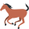

حرفا الحاء والهاء
الدرس 1 من 6 — القراءة
درسنانتعلّم اليوم الحرفين ح، ه. اضغط على الحرف لتسمع اسمه، ثمّ على المقاطع لتسمع صوته، ثمّ اقرأ الكلمات مقطعاً مقطعاً.
حرف الحاء
اضغط واستمع: الحركات
اضغط واستمع: المقاطع الطويلة والساكنة
أشكال الحرف في الكلمة
حـفي أوّلها
ـحـفي وسطها
ـحفي آخرها

حِصَانٌ
حُوتٌ
حَلِيبٌ
حرف الهاء
اضغط واستمع: الحركات
اضغط واستمع: المقاطع الطويلة والساكنة
أشكال الحرف في الكلمة
هـفي أوّلها
ـهـفي وسطها
ـهفي آخرها
هَدِيَّةٌ
هَاتِفٌ
هِلَالٌ
أُطبّق
1اضغط 🔊 واسمع، ثمّ اختر المقطع الصحيح:
2اضغط 🔊 واسمع الكلمة: بأيّ حرف تبدأ؟
3اضغط 🔊 واسمع الكلمة: بأيّ حرف تبدأ؟
4اضغط 🔊 واسمع، ثمّ اختر الحرف الذي تسمعه:
5اختر الصورة التي تبدأ بحرف ه:
6اختر الصورة التي تبدأ بحرف ح:
7اضغط 🔊 واسمع، ثمّ اختر الحرف الذي تسمعه:
8اضغط 🔊 واسمع، ثمّ اختر المقطع الصحيح:
إجابات صحيحة من أول محاولة:
أتمرّن أكثر
أستمع، ثمّ أكتب ما أسمع:
أستمع، ثمّ أكتب ما أسمع:
✓ أنهيتَ هذا الدرس
الرسوم: Twemoji (CC-BY 4.0) وFluent Emoji من Microsoft (MIT). الأصوات: صوت عربي اصطناعي.